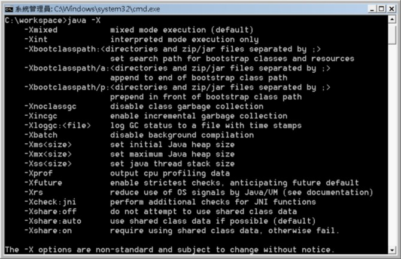
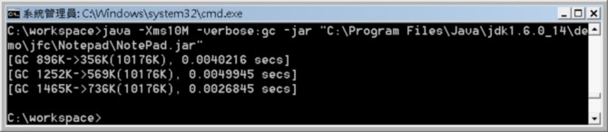
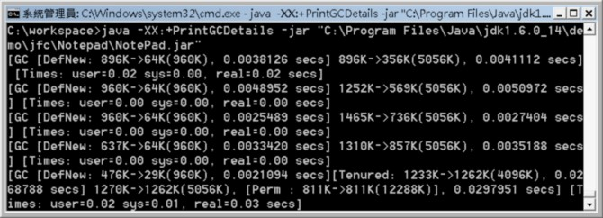

|
|
在執行JVM時，可以下-X引數，以顯示非標準引數選項的說明：  這邊所顯示的是Sun的JDK非標準引數。其中最為人熟悉的，就是-Xms、-Xmx，分別用來設定JVM所使用Heap的初始值與最大值，設定時如果沒有指定單位，則以KB為單位，可使用K或M指定所使用的單位。例如指定10M：  除了-X可顯示非標準選項之外，還有-XX選項，這些選項基本上不建議使用，因為在未來可能在沒有任何說明或通知的情況下拿掉該選項，這些選項值列於 http://java.sun.com/javase/technologies/hotspot/vmoptions.jsp。 舉個例子來說，若想要進一步觀察GC更細部的資訊，可以在啟動JVM時，加上-XX:+PrintGCDetails：  正如在 GC 前、GC 後 中說明過的，Heap分作幾個區域，其中年輕輩（young generation）專門存放新生物件，年長輩（tenured generation）則存放較長命的物件。輕量收集（minor collection）作用於年輕輩區，而重量收集（major collection）作用於年長輩區。-XX:+PrintGCDetails可以讓您觀察到年輕輩區DefNew及年長輩區Tenured大小以及GC前後的情況。 在 http://java.sun.com/docs/hotspot/gc5.0/gc_tuning_5.html 中有提到，JVM一開始會虛擬地保留最大記憶體位址，但沒有真正配給實體記憶體直到真正需要為止。年輕輩與年長輩大小的比例有預設值，而年輕輩區還分為伊甸區（Eden）與兩塊存活（Survivor）區，新生物件都會產生在伊甸區，而存活區總是會有一塊是空的，以作為在輕量收集後伊甸區以及另一塊存活區的存活物件的複製目的地。物件會在兩塊存活區之間複製，直到活的夠久被複製到年長輩區。 -XX:MinHeapFreeRatio可用來調整當JVM可用記憶體低於某個比例時，必須重新計算輩份區，-XX:MaxHeapFreeRatio可用來調整當JVM可用記憶體高於某個比例時，必須重新計算輩份區。在基本的效能調整中，可以將-Xms與-Xmx設為一樣的大小，也就是一開始就讓JVM得到最大的記憶體設定值，如此就不會有重新計算輩份區比例的成本。 如果有需要，也可以試著調整輩份區的比例（依應用程式需求），這可以用-XX:NewRatio來調整，設定值是一個整數，例如-XX:NewRatio=3表示年輕輩:年長輩=1:3。-XX:NewSize可以調整年輕輩區的大小。-XX:MaxNewSize可以調整年輕輩區的最大值。-XX:SurvivorRatio可以調整存活區在年輕輩區中的比例，例如-XX:SurvivorRatio=6表示每個存活區:伊甸區=1:6。 在中的永久區（permanent generation），是用來存放如Class等物件的區塊，必要時可以使用-XX:PermSize、-XX:MaxPermSize來調整其大小。 |